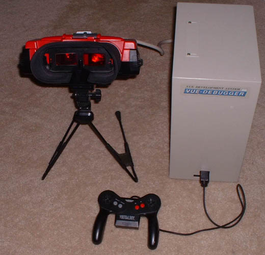
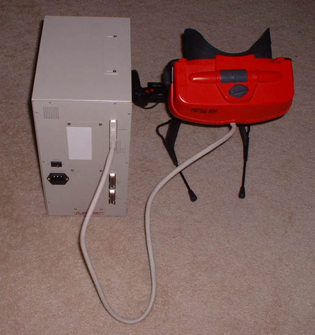
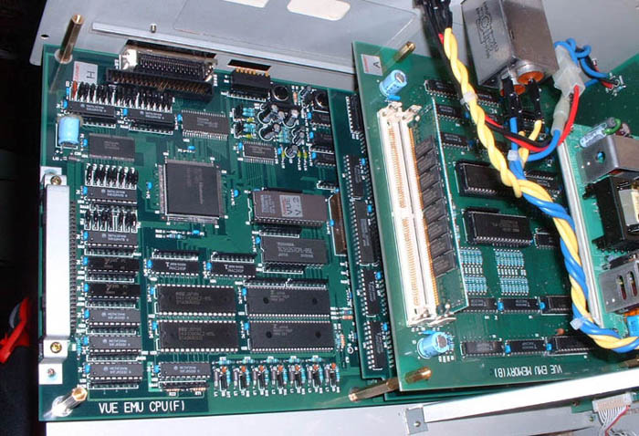
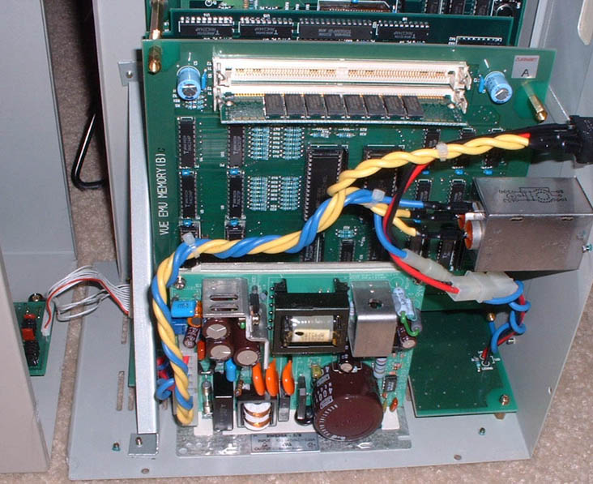
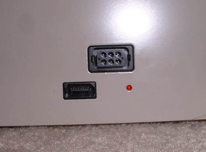
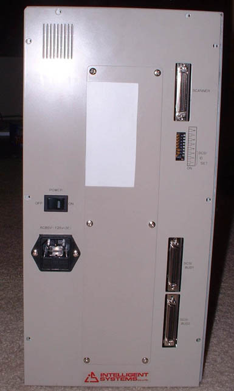
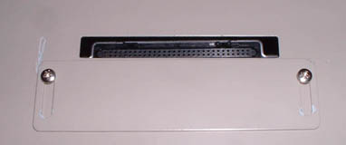
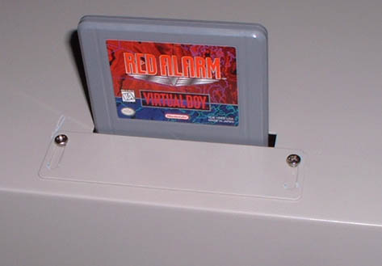
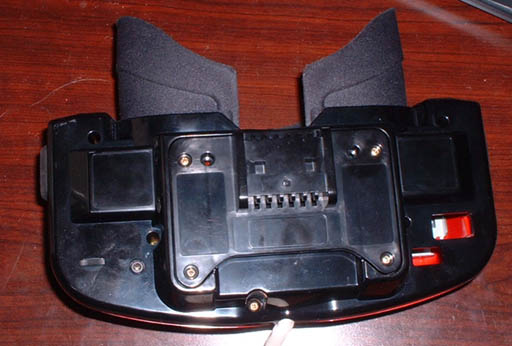

VUE-Debugger
First, I'd like to thank a VERY generous anonymous friend for letting me borrow the development kit. Unfortunately, I was never able to get it working successfully, and I've since returned it. The computer detected it, but the software was never able to recognize it. It looks very complete, so I'm sure it's something that I wasn't doing correctly, or very possibly the lack of the original SCSI card. Well, on with the pics/info!

Here's the front of the kit connected together.

And the back of it, disconnected from power and the PC.

Here's a quick snapshot of the internals of the beast.

And another...

The connector for the controller and link port, it's the standard connector mold from a normal VB.

The back of the system with the display output at the top, the dip switches for the SCSI ID and other stuff, and the SCSI connector ports below that, and of course the power socket and switch on the left.

The cart socket on the top of the debugger... my guess is that it's for reading/writing carts.

A cart in the cart socket.

The bottom of the debugger display... that's the only part that's different on the outside from a regular Virtual Boy, the plastic is a smooth shiny plastic with no text on the bottom, instead of the textured duller plastic with text on the bottom like the released VB has. Also, notice that there is no controller / link ports, you can see right in, just like where the cart slot is.
{kind=link}